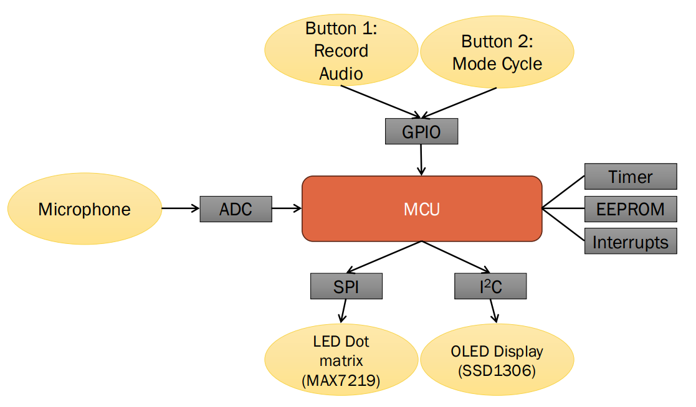
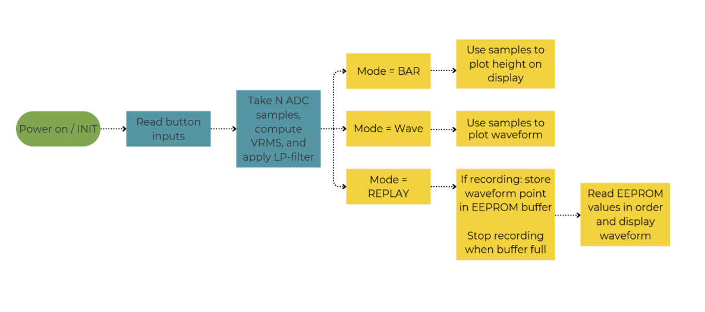
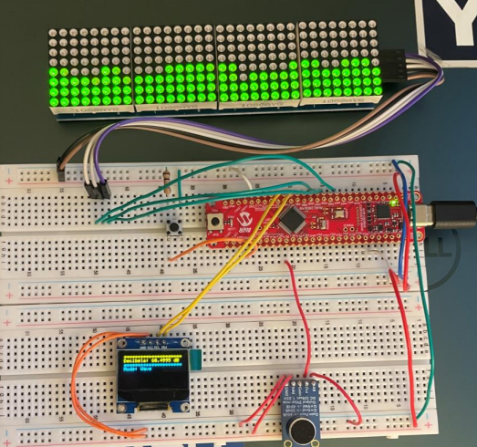
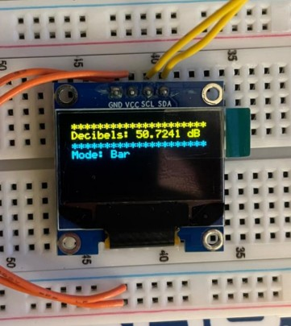
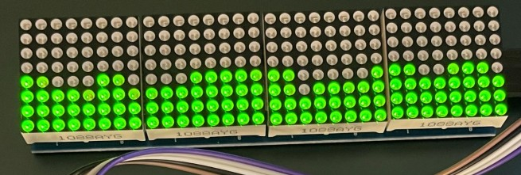

ECE 3411 Microprocessor Applications Laboratory · UConn, Fall 2025
A microcontroller-based system that samples sound from an electret microphone and visualizes the intensity on two displays in real time: an OLED showing the current sound level in decibels plus the active mode, and a 32×8 LED dot matrix showing the level graphically. The system has three modes: bar (current level as a bar graph), wave (recent levels scrolling as a waveform), and replay (waveforms recorded to EEPROM and played back). Modes are switched with a pushbutton.
Short walkthrough of the three visualization modes. The OLED shows the live dB reading and the active mode label while the LED matrix shows the corresponding graphical output. This demo was recorded informally during our final demo to the professor.
The course project gave each team free rein to build something on the AVR microcontroller platform we'd been using all semester, as long as it integrated several of the peripherals we'd covered (ADC, timers, I²C, SPI, interrupts, EEPROM). We chose a sound visualizer because it touched most of them naturally: analog input through the ADC, a real-time processing loop on timer interrupts, two displays on two different serial buses (I²C and SPI), button input, and EEPROM for the record-and-replay feature.
The microcontroller reads the microphone through its ADC on a timer-driven schedule. Samples are accumulated into an RMS value, low-pass filtered, and sent to two outputs depending on the active mode. The OLED shows the numeric dB readout and mode label over I²C and the LED dot matrix shows the corresponding graphical visualization over SPI. Two buttons handle mode cycling and starting a recording.

Block diagram of the system: ADC reads the microphone, the MCU drives the OLED over I²C and the LED matrix over SPI, with buttons and EEPROM as additional peripherals

Software flow: sample → RMS + filter → branch on mode (bar, wave, replay)
The OLED is a 128×64 SSD1306 panel on the I²C bus. There are off-the-shelf libraries for this part, but the assignment was about working close to the hardware, so I wrote the driver from scratch against the SSD1306 datasheet. The driver sits on top of the AVR's TWI1 peripheral registers directly.
Initialization sequence.
The SSD1306 requires a specific 15-command setup before it'll display anything: turning on the charge pump, setting the multiplex ratio for the 64-pixel height, picking horizontal addressing mode, setting segment and COM scan directions so the image isn't mirrored or flipped, and so on. Each value comes out of the datasheet and means something specific. I wrote them out with inline comments so the intent of each byte is obvious:
Framebuffer and page-by-page push.
The SSD1306 organizes its display memory in 8 horizontal "pages" of 128 columns, where each page is one byte tall (8 vertical pixels). I keep a 1024-byte framebuffer in RAM matching that layout, do all drawing into RAM, then push the framebuffer to the panel one page at a time over I²C. This means individual character writes are cheap (just memory writes) and the cost of going to the bus is paid once per refresh instead of once per pixel.
Font rendering.
I used a 6×8 monospace font table covering ASCII 0x20–0x7F: each character is six column-bytes, with the first five carrying the glyph and the sixth always zero for spacing. On top of that are cursor / putc / print functions that take a string, look up each character in the table, and copy its six bytes into the framebuffer at the cursor position. At 6 px per character and 128 px of width, that's 21 characters per row, and the 64-pixel height gives 8 rows of text, enough for the dB readout, the mode label, and one or two status lines.
On the input side, the microphone is sampled by the ADC at a fixed rate driven by a timer. Every 16 samples are accumulated and an RMS value is computed. That RMS value is then run through a low-pass filter to produce the smoothed level used by the displays. Two filter constants are used, a slower one for the bar mode (so the dB reading on the OLED doesn't twitch on every sample) and a faster one for the wave mode (so the waveform on the LED matrix still has visible shape). My teammate wrote this side of the system, the smoothed envelope it produces is what the OLED prints and what the LED matrix renders.
The three modes share the same audio pipeline, what changes is how the smoothed level is rendered:
One integration issue worth calling out: early on, the OLED was being refreshed too aggressively and the time spent on I²C transactions was slowing down the ADC and LED matrix loops. The fix was to gate the OLED update on a 250 ms timer rather than refreshing it every audio frame.

Full system: microcontroller, microphone, OLED, LED matrix, and buttons on one breadboard


OLED with the live dB readout and mode label (left), 32×8 LED matrix showing the visualization (right)